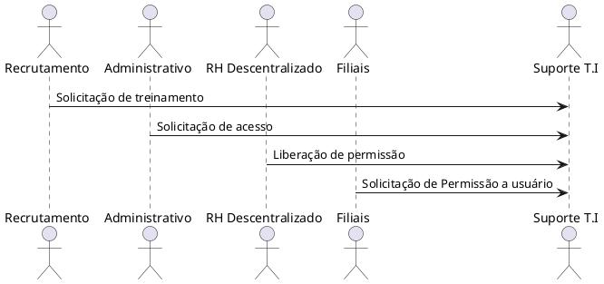

Visão Geral do Suporte de T.I Senior¶
O setor de Suporte de T.I Senior é responsável por atender as demandas relacionadas ao sistema Senior, que é o sistema de gestão de pessoas utilizado pela COOPAVEL. O setor é responsável por atender as demandas, como atualizações, inserção de dados, treinamentos e dúvidas relacionadas ao sistema, atendendo tanto o setor RH local como das filiais.
Funções e Responsabilidades:¶
Entre as principais responsabilidades do setor de referente, estão: o Atender aos chamados relacionados a atualizações de dados, Inserção de dados, como inserir novos usuários para acesso ao sistema;
o Tirar Dúvidas com relação a processos;¶
o Atender e fornecer informações pertinentes a cada área; o Treinamentos focados em cada área.
Objetivos da Área:¶
A área tem como objetivo estratégico, analisar as demandas, pesar as consequências(positivas e negativas) do impacto de mudanças e atualizações dentro do sistema, tendo em vista ser um setor estratégico e de suma importância para a instituição.
Interfaces com Outras Áreas:¶
Os setores de Recrutamento, Desenvolvimento Humano Organizacional, Admissão, Administração, RH Descentralizados e Filiais de maneira abrangente conversam com setor Suporte T.I Senior. Para diversas atividades que envolvem pessoas, Mudança de cargo, admissão demissão etc.
